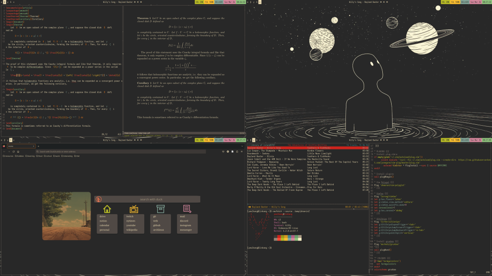

Because Windows is trash, and Apple computers are expensive, I use Linux, Endeavour Linux. You can find a picture of my setup at the bottom of this page. Some basic details:
- Distribution: EndeavourOS (arch-based)
- Window Manager: i3
- Colour Palette: gruvbox
- Terminal: kitty
- Bar: polybar
- Editor: vim
- LaTeX Plugin: vimtex
- PDF Viewer: zathura
Some of my dotfiles can be found on my GitHub.
